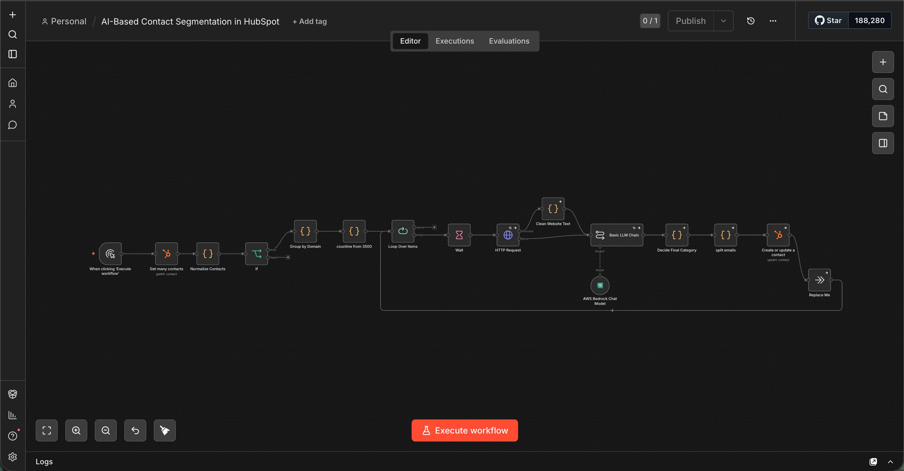

HubSpot + Clay Automation
Two complementary CRM systems — AI segmentation of 25,000+ contacts, and a Clay enrichment pipeline that produced 785 verified senior contacts for a launch campaign.

01Overview
Two parts. (A) An AI segmentation workflow that classifies 25,000+ email-only HubSpot contacts into market categories from their company website. (B) A Clay enrichment pipeline that builds and double-validates a targeted senior-contact list for campaigns.
02Business problem
HubSpot held 25,000+ contacts with only an email — no segment — so campaigns weren't possible; and new launch campaigns needed clean, verified decision-maker lists rather than dirty, bounce-prone ones.
03Architecture
04Workflow
06AI components
- LLM classification (Azure OpenAI GPT-4o) into 6 US-market categories with confidence + reasoning.
- Fallback category logic.
- A business-domain gate that skips AI for free/personal domains to cut cost.
07Integrations
- HubSpot (read, custom property, Active Lists).
- HTTP website fetch.
- Azure OpenAI GPT-4o.
- Clay (Find Companies/People/Emails) with Datagma + Wiza validation and HubSpot export.
08Technical challenges
- Cost control at scale — domain grouping avoids redundant company lookups, and the business-domain gate skips unnecessary AI calls.
- Token-budgeted website truncation.
- Fallback logic so every contact resolves to a category.
- Email double-validation before export.
09Reliability engineering
- Deployment: re-runnable batch + webhook variant for live leads; Clay pipeline exports to a HubSpot static list.
- Monitoring: per-contact category + confidence written back to HubSpot; validation status per Clay contact.
- Error handling: batch processing to avoid API overload; domain gate; output-format fallback.
- Validation: Datagma + Wiza double-validation; work-email-only filter; dedup on export.
- Scalability: domain grouping collapses 25k contacts into far fewer lookups; the Clay pipeline is repeatable across industries/regions.
10Business impact
11Lessons learned
Cost is a design decision. Domain grouping + a business-domain gate cut LLM calls dramatically; and on the enrichment side, list quality beats list size — two validators before export made the campaign deliverable.
12Future improvements
- Auto-refresh segments on contact update.
- Feed Clay-verified contacts straight into a sequenced campaign.
- Add per-segment performance tracking.